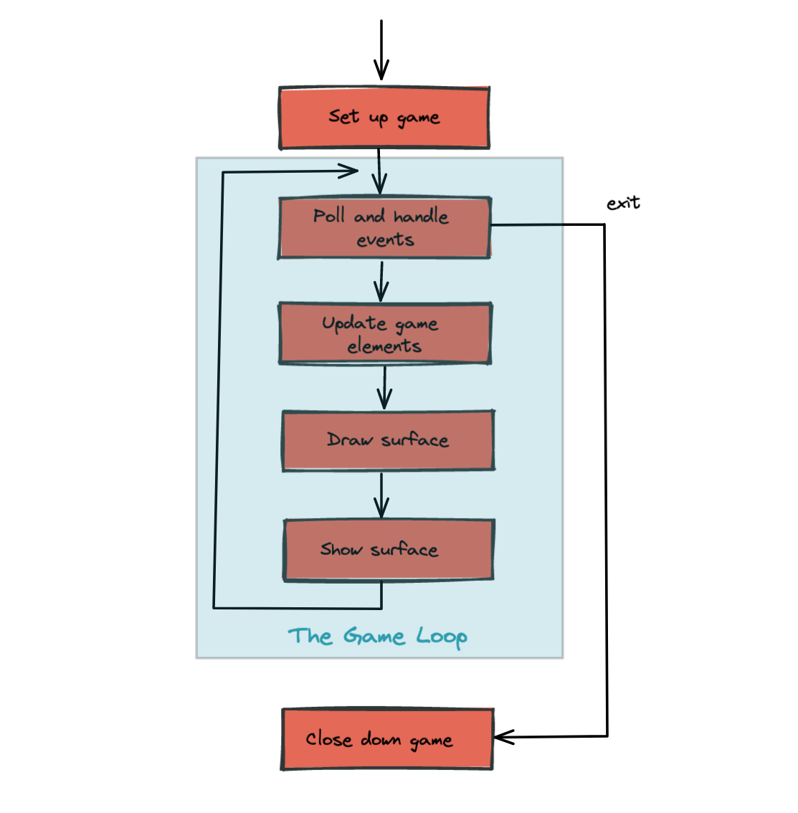
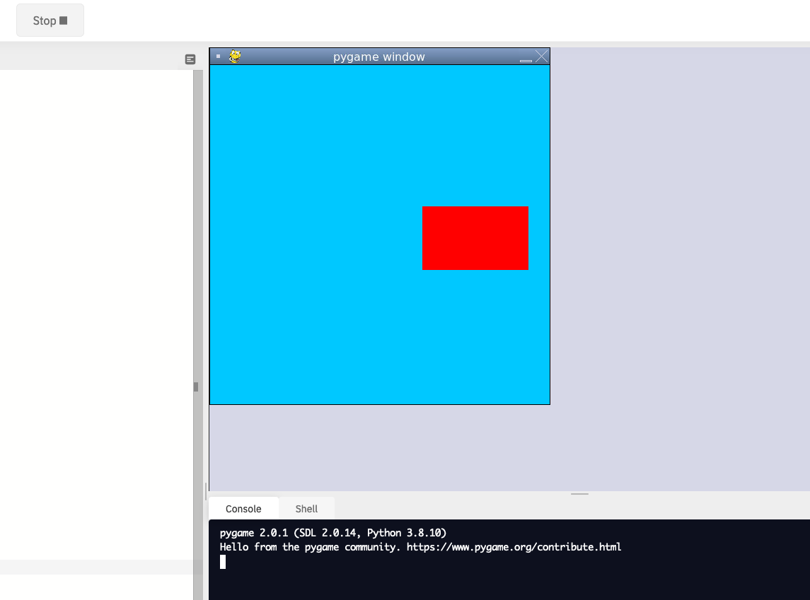
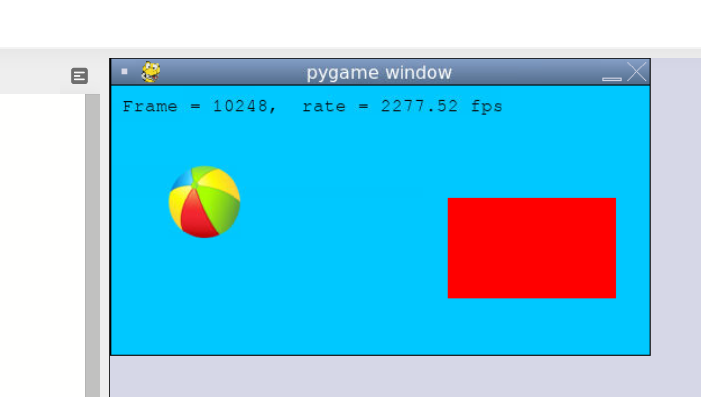
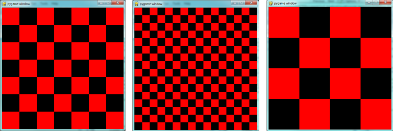
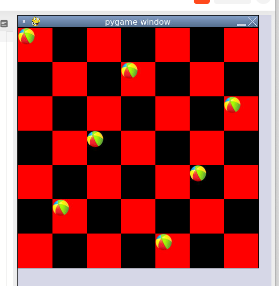
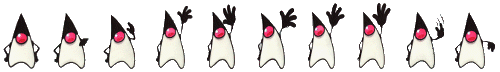
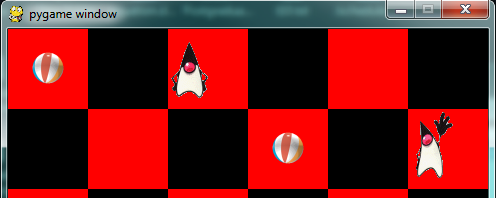

PyGame is a package that is not part of the standard Python distribution, so if you do not already have it installed (i.e. import pygame fails), download and install a suitable version from http://pygame.org/download.shtml. These notes are based on PyGame 1.9.1, the most recent version at the time of writing.
PyGame comes with a substantial set of tutorials, examples, and help, so there is ample opportunity to stretch yourself on the code. You may need to look around a bit to find these resources, though: if you’ve installed PyGame on a Windows machine, for example, they’ll end up in a folder like C:\Python31\Lib\site-packages\pygame\ where you will find directories for docs and examples.
The structure of the games we’ll consider always follows this fixed pattern:

In every game, in the setup section we’ll create a window, load and prepare some content, and then enter the game loop. The game loop continuously does four main things:
import pygame
def main():
""" Set up the game and run the main game loop """
pygame.init() # Prepare the pygame module for use
surface_sz = 480 # Desired physical surface size, in pixels.
# Create surface of (width, height), and its window.
main_surface = pygame.display.set_mode((surface_sz, surface_sz))
# Set up some data to describe a small rectangle and its color
small_rect = (300, 200, 150, 90)
some_color = (255, 0, 0) # A color is a mix of (Red, Green, Blue)
while True:
ev = pygame.event.poll() # Look for any event
if ev.type == pygame.QUIT: # Window close button clicked?
break # ... leave game loop
# Update your game objects and data structures here...
# We draw everything from scratch on each frame.
# So first fill everything with the background color
main_surface.fill((0, 200, 255))
# Overpaint a smaller rectangle on the main surface
main_surface.fill(some_color, small_rect)
# Now the surface is ready, tell pygame to display it!
pygame.display.flip()
pygame.quit() # Once we leave the loop, close the window.
main()This program pops up a window which stays there until we close it:

PyGame does all its drawing onto rectangular surfaces. After initializing PyGame at line 5, we create a window holding our main surface. The main loop of the game extends from line 15 to 30, with the following key bits of logic:
main. Your program could go on to do other things, or reinitialize pygame and create another window, but it will usually just end too.some_color, and small_rect here.fill method of a surface takes two arguments — the color to use for filling, and the rectangle to be filled. But the second argument is optional, and if it is left out the entire surface is filled.some_color. The placement and size of the rectangle are given by the tuple small_rect, a 4-element tuple (x, y, width, height).flip the buffers, on line 30.To draw an image on the main surface, we load the image, say a beach ball, into its own new surface. The main surface has a blit method that copies pixels from the beach ball surface into its own surface. When we call blit, we can specify where the beach ball should be placed on the main surface. The term blit is widely used in computer graphics, and means to make a fast copy of pixels from one area of memory to another.
So in the setup section, before we enter the game loop, we’d load the image, like this:
ball = pygame.image.load("ball.png")and after line 28 in the program above, we’d add this code to display our image at position (100,120):
main_surface.blit(ball, (50, 70))To display text, we need do do three things. Before we enter the game loop, we instantiate a font object:
# Instantiate 16 point Courier font to draw text.
my_font = pygame.font.SysFont("Courier", 16) and after line 28, again, we use the font’s render method to create a new surface containing the pixels of the drawn text, and then, as in the case for images, we blit our new surface onto the main surface. Notice that render takes two extra parameters — the second tells it whether to carefully smooth edges of the text while drawing (this process is called anti-aliasing), and the second is the color that we want the text text be. Here we’ve used (0,0,0) which is black:
the_text = my_font.render("Hello, world!", True, (0,0,0))
main_surface.blit(the_text, (10, 10))We’ll demonstrate these two new features by counting the frames — the iterations of the game loop — and keeping some timing information. On each frame, we’ll display the frame count, and the frame rate. We will only update the frame rate after every 500 frames, when we’ll look at the timing interval and can do the calculations.
First download an image of a beach ball. You can find one at https://learnpythontherightway.com/_downloads/ball.png. Upload it to your repl by using the “Upload file” menu. Now you can run the following code.
import pygame
import time
def main():
pygame.init() # Prepare the PyGame module for use
main_surface = pygame.display.set_mode((480, 240))
# Load an image to draw. Substitute your own.
# PyGame handles gif, jpg, png, etc. image types.
ball = pygame.image.load("ball.png")
# Create a font for rendering text
my_font = pygame.font.SysFont("Courier", 16)
frame_count = 0
frame_rate = 0
t0 = time.process_time()
while True:
# Look for an event from keyboard, mouse, joystick, etc.
ev = pygame.event.poll()
if ev.type == pygame.QUIT: # Window close button clicked?
break # Leave game loop
# Do other bits of logic for the game here
frame_count += 1
if frame_count % 500 == 0:
t1 = time.process_time()
frame_rate = 500 / (t1-t0)
t0 = t1
# Completely redraw the surface, starting with background
main_surface.fill((0, 200, 255))
# Put a red rectangle somewhere on the surface
main_surface.fill((255,0,0), (300, 100, 150, 90))
# Copy our image to the surface, at this (x,y) posn
main_surface.blit(ball, (50, 70))
# Make a new surface with an image of the text
the_text = my_font.render("Frame = {0}, rate = {1:.2f} fps"
.format(frame_count, frame_rate), True, (0,0,0))
# Copy the text surface to the main surface
main_surface.blit(the_text, (10, 10))
# Now that everything is drawn, put it on display!
pygame.display.flip()
pygame.quit()
main()The frame rate is close to ridiculous — a lot faster than one’s eye can process frames. (Commercial video games usually plan their action for 60 frames per second (fps).) Of course, our rate will drop once we start doing something a little more strenuous inside our game loop.

We previously solved our N queens puzzle. For the 8x8 board, one of the solutions was the list [6,4,2,0,5,7,1,3]. Let’s use that solution as testdata, and now use PyGame to draw that chessboard with its queens.
We’ll create a new module for the drawing code, called draw_queens.py. When we have our test case(s) working, we can go back to our solver, import this new module, and add a call to our new function to draw a board each time a solution is discovered.
We begin with a background of black and red squares for the board. Perhaps we could create an image that we could load and draw, but that approach would need different background images for different size boards. Just drawing our own red and black rectangles of the appropriate size sounds like much more fun!
def draw_board(the_board):
""" Draw a chess board with queens, from the_board. """
pygame.init()
colors = [(255,0,0), (0,0,0)] # Set up colors [red, black]
n = len(the_board) # This is an NxN chess board.
surface_sz = 480 # Proposed physical surface size.
sq_sz = surface_sz // n # sq_sz is length of a square.
surface_sz = n * sq_sz # Adjust to exactly fit n squares.
# Create the surface of (width, height), and its window.
surface = pygame.display.set_mode((surface_sz, surface_sz))Here we precompute sq_sz, the integer size that each square will be, so that we can fit the squares nicely into the available window. So if we’d like the board to be 480x480, and we’re drawing an 8x8 chessboard, then each square will need to have a size of 60 units. But we notice that a 7x7 board cannot fit nicely into 480 — we’re going to get some ugly border that our squares don’t fill exactly. So we recompute the surface size to exactly fit our squares before we create the window.
Now let’s draw the squares, in the game loop. We’ll need a nested loop: the outer loop will run over the rows of the chessboard, the inner loop over the columns:
# Draw a fresh background (a blank chess board)
for row in range(n): # Draw each row of the board.
c_indx = row % 2 # Change starting color on each row
for col in range(n): # Run through cols drawing squares
the_square = (col*sq_sz, row*sq_sz, sq_sz, sq_sz)
surface.fill(colors[c_indx], the_square)
# now flip the color index for the next square
c_indx = (c_indx + 1) % 2 There are two important ideas in this code: firstly, we compute the rectangle to be filled from the row and col loop variables, multiplying them by the size of the square to get their position. And, of course, each square is a fixed width and height. So the_square represents the rectangle to be filled on the current iteration of the loop. The second idea is that we have to alternate colors on every square. In the earlier setup code we created a list containing two colors, here we manipulate c_indx (which will always either have the value 0 or 1) to start each row on a color that is different from the previous row’s starting color, and to switch colors each time a square is filled.
This (together with the other fragments not shown to flip the surface onto the display) leads to the pleasing backgrounds like this, for different size boards:

Now, on to drawing the queens! Recall that our solution [6,4,2,0,5,7,1,3] means that in column 0 of the board we want a queen at row 6, at column 1 we want a queen at row 4, and so on. So we need a loop running over each queen:
for (col, row) in enumerate(the_board):
# draw a queen at col, row...In this chapter we already have a beach ball image, so we’ll use that for our queens. In the setup code before our game loop, we load the ball image (as we did before), and in the body of the loop, we add the line:
surface.blit(ball, (col * sq_sz, row * sq_sz))
We’re getting there, but those queens need to be centred in their squares! Our problem arises from the fact that both the ball and the rectangle have their upper left corner as their reference points. If we’re going to centre this ball in the square, we need to give it an extra offset in both the x and y direction. (Since the ball is round and the square is square, the offset in the two directions will be the same, so we’ll just compute a single offset value, and use it in both directions.)
The offset we need is half the (size of the square less the size of the ball). So we’ll precompute this in the game’s setup section, after we’ve loaded the ball and determined the square size:
ball_offset = (sq_sz - ball.get_width()) // 2Now we touch up the drawing code for the ball and we’re done:
surface.blit(ball, (col * sq_sz + ball_offset, row * q_sz + ball_offset)) We might just want to think about what would happen if the ball was bigger than the square. In that case, ball_offset would become negative. So it would still be centered in the square - it would just spill over the boundaries, or perhaps obscure the square entirely!
Here is the complete program:
import pygame
def draw_board(the_board):
""" Draw a chess board with queens, as determined by the the_board. """
pygame.init()
colors = [(255,0,0), (0,0,0)] # Set up colors [red, black]
n = len(the_board) # This is an NxN chess board.
surface_sz = 480 # Proposed physical surface size.
sq_sz = surface_sz // n # sq_sz is length of a square.
surface_sz = n * sq_sz # Adjust to exactly fit n squares.
# Create the surface of (width, height), and its window.
surface = pygame.display.set_mode((surface_sz, surface_sz))
ball = pygame.image.load("ball.png")
# Use an extra offset to centre the ball in its square.
# If the square is too small, offset becomes negative,
# but it will still be centered :-)
ball_offset = (sq_sz-ball.get_width()) // 2
while True:
# Look for an event from keyboard, mouse, etc.
ev = pygame.event.poll()
if ev.type == pygame.QUIT:
break;
# Draw a fresh background (a blank chess board)
for row in range(n): # Draw each row of the board.
c_indx = row % 2 # Alternate starting color
for col in range(n): # Run through cols drawing squares
the_square = (col*sq_sz, row*sq_sz, sq_sz, sq_sz)
surface.fill(colors[c_indx], the_square)
# Now flip the color index for the next square
c_indx = (c_indx + 1) % 2
# Now that squares are drawn, draw the queens.
for (col, row) in enumerate(the_board):
surface.blit(ball,
(col*sq_sz+ball_offset,row*sq_sz+ball_offset))
pygame.display.flip()
pygame.quit()
if __name__ == "__main__":
draw_board([0, 5, 3, 1, 6, 4, 2]) # 7 x 7 to test window size
draw_board([6, 4, 2, 0, 5, 7, 1, 3])
draw_board([9, 6, 0, 3, 10, 7, 2, 4, 12, 8, 11, 5, 1]) # 13 x 13
draw_board([11, 4, 8, 12, 2, 7, 3, 15, 0, 14, 10, 6, 13, 1, 5, 9])There is one more thing worth reviewing here. The conditional statement on line 50 tests whether the name of the currently executing program is __main__. This allows us to distinguish whether this module is being run as a main program, or whether it has been imported elsewhere, and used as a module. If we run this module in Python, the test cases in lines 51-54 will be executed. However, if we import this module into another program (i.e. our N queens solver from earlier) the condition at line 50 will be false, and the statements on lines 51-54 won’t run.
In Chapter 14, (14.9. Eight Queens puzzle, part 2) our main program looked like this:
def main():
bd = list(range(8)) # Generate the initial permutation
num_found = 0
tries = 0
while num_found < 10:
random.shuffle(bd)
tries += 1
if not has_clashes(bd):
print("Found solution {0} in {1} tries.".format(bd, tries))
tries = 0
num_found += 1
main()Now we just need two changes. At the top of that program, we import the module that we’ve been working on here (assume we called it draw_queens). (You’ll have to ensure that the two modules are saved in the same folder.) Then after line 10 here we add a call to draw the solution that we’ve just discovered:
draw_queens.draw_board(bd)And that gives a very satisfying combination of program that can search for solutions to the N queens problem, and when it finds each, it pops up the board showing the solution.
A sprite is an object that can move about in a game, and has internal behaviour and state of its own. For example, a spaceship would be a sprite, the player would be a sprite, and bullets and bombs would all be sprites.
Object oriented programming (OOP) is ideally suited to a situation like this: each object can have its own attributes and internal state, and a couple of methods. Let’s have some fun with our N queens board. Instead of placing the queen in her final position, we’d like to drop her in from the top of the board, and let her fall into position, perhaps bouncing along the way.
The first encapsulation we need is to turn each of our queens into an object. We’ll keep a list of all the active sprites (i.e. a list of queen objects), and arrange two new things in our game loop:
update method on every sprite. This will give each sprite a chance to modify its internal state in some way — perhaps change its image, or change its position, or rotate itself, or make itself grow a bit bigger or a bit smaller.draw method on each sprite in turn, and delegate (hand off) the task of drawing to the object itself. This is in line with the OOP idea that we don’t say “Hey, draw, show this queen!”, but we prefer to say “Hey, queen, draw yourself!”.We start with a simple object, no movement or animation yet, just scaffolding, to see how to fit all the pieces together:
class QueenSprite:
def __init__(self, img, target_posn):
""" Create and initialize a queen for this
target position on the board
"""
self.image = img
self.target_posn = target_posn
self.posn = target_posn
def update(self):
return # Do nothing for the moment.
def draw(self, target_surface):
target_surface.blit(self.image, self.posn) We’ve given the sprite three attributes: an image to be drawn, a target position, and a current position. If we’re going to move the spite about, the current position may need to be different from the target, which is where we want the queen finally to end up. In this code at this time we’ve done nothing in the update method, and our draw method (which can probably remain this simple in future) simply draws itself at its current position on the surface that is provided by the caller.
With its class definition in place, we now instantiate our N queens, put them into a list of sprites, and arrange for the game loop to call the update and draw methods on each frame. The new bits of code, and the revised game loop look like this:
all_sprites = [] # Keep a list of all sprites in the game
# Create a sprite object for each queen, and populate our list.
for (col, row) in enumerate(the_board):
a_queen = QueenSprite(ball,
(col*sq_sz+ball_offset, row*sq_sz+ball_offset))
all_sprites.append(a_queen)
while True:
# Look for an event from keyboard, mouse, etc.
ev = pygame.event.poll()
if ev.type == pygame.QUIT:
break;
# Ask every sprite to update itself.
for sprite in all_sprites:
sprite.update()
# Draw a fresh background (a blank chess board)
# ... same as before ...
# Ask every sprite to draw itself.
for sprite in all_sprites:
sprite.draw(surface)
pygame.display.flip()This works just like it did before, but our extra work in making objects for the queens has prepared the way for some more ambitious extensions.
Let us begin with a falling queen object. At any instant, it will have a velocity i.e. a speed, in a certain direction. (We are only working with movement in the y direction, but use your imagination!) So in the object’s update method, we want to change its current position by its velocity. If our N queens board is floating in space, velocity would stay constant, but hey, here on Earth we have gravity! Gravity changes the velocity on each time interval, so we’ll want a ball that speeds up as it falls further. Gravity will be constant for all queens, so we won’t keep it in the instances — we’ll just make it a variable in our module. We’ll make one other change too: we will start every queen at the top of the board, so that it can fall towards its target position. With these changes, we now get the following:
gravity = 0.0001
class QueenSprite:
def __init__(self, img, target_posn):
self.image = img
self.target_posn = target_posn
(x, y) = target_posn
self.posn = (x, 0) # Start ball at top of its column
self.y_velocity = 0 # with zero initial velocity
def update(self):
self.y_velocity += gravity # Gravity changes velocity
(x, y) = self.posn
new_y_pos = y + self.y_velocity # Velocity moves the ball
self.posn = (x, new_y_pos) # to this new position.
def draw(self, target_surface): # Same as before.
target_surface.blit(self.image, self.posn)Making these changes gives us a new chessboard in which each queen starts at the top of its column, and speeds up, until it drops off the bottom of the board and disappears forever. A good start — we have movement!
The next step is to get the ball to bounce when it reaches its own target position. It is pretty easy to bounce something — you just change the sign of its velocity, and it will move at the same speed in the opposite direction. Of course, if it is travelling up towards the top of the board it will be slowed down by gravity. (Gravity always sucks down!) And you’ll find it bounces all the way up to where it began from, reaches zero velocity, and starts falling all over again. So we’ll have bouncing balls that never settle.
A realistic way to settle the object is to lose some energy (probably to friction) each time it bounces — so instead of simply reversing the sign of the velocity, we multiply it by some fractional factor — say -0.65. This means the ball only retains 65% of its energy on each bounce, so it will, as in real life, stop bouncing after a short while, and settle on its “ground”.
The only changes are in the update method, which now looks like this:
def update(self):
self.y_velocity += gravity
(x, y) = self.posn
new_y_pos = y + self.y_velocity
(target_x, target_y) = self.target_posn # Unpack the position
dist_to_go = target_y - new_y_pos # How far to our floor?
if dist_to_go < 0: # Are we under floor?
self.y_velocity = -0.65 * self.y_velocity # Bounce
new_y_pos = target_y + dist_to_go # Move back above floor
self.posn = (x, new_y_pos) # Set our new position.Heh, heh, heh! We’re not going to show animated screenshots, so copy the code into your Python environment and see for yourself.
The only kind of event we’re handled so far has been the QUIT event. But we can also detect keydown and keyup events, mouse motion, and mousebutton down or up events. Consult the PyGame documentation and follow the link to Event.
When your program polls for and receives an event object from PyGame, its event type will determine what secondary information is available. Each event object carries a dictionary (which you may only cover in due course in these notes). The dictionary holds certain keys and values that make sense for the type of event.
For example, if the type of event is MOUSEMOTION, we’ll be able to find the mouse position and information about the state of the mouse buttons in the dictionary attached to the event. Similarly, if the event is KEYDOWN, we can learn from the dictionary which key went down, and whether any modifier keys (shift, control, alt, etc.) are also down. You also get events when the game window becomes active (i.e. gets focus) or loses focus.
The event object with type NOEVENT is returned if there are no events waiting. Events can be printed, allowing you to experiment and play around. So dropping these lines of code into the game loop directly after polling for any event is quite informative:
if ev.type != pygame.NOEVENT: # Only print if it is interesting!
print(ev)With this is place, hit the space bar and the escape key, and watch the events you get. Click your three mouse buttons. Move your mouse over the window. (This causes a vast cascade of events, so you may also need to filter those out of the printing.) You’ll get output that looks something like this:
<Event(17-VideoExpose {})>
<Event(1-ActiveEvent {'state': 1, 'gain': 0})>
<Event(2-KeyDown {'scancode': 57, 'key': 32, 'unicode': ' ', 'mod': 0})>
<Event(3-KeyUp {'scancode': 57, 'key': 32, 'mod': 0})>
<Event(2-KeyDown {'scancode': 1, 'key': 27, 'unicode': '\x1b', 'mod': 0})>
<Event(3-KeyUp {'scancode': 1, 'key': 27, 'mod': 0})>
...
<Event(4-MouseMotion {'buttons': (0, 0, 0), 'pos': (323, 194), 'rel': (-3, -1)})>
<Event(4-MouseMotion {'buttons': (0, 0, 0), 'pos': (322, 193), 'rel': (-1, -1)})>
<Event(4-MouseMotion {'buttons': (0, 0, 0), 'pos': (321, 192), 'rel': (-1, -1)})>
<Event(4-MouseMotion {'buttons': (0, 0, 0), 'pos': (319, 192), 'rel': (-2, 0)})>
<Event(5-MouseButtonDown {'button': 1, 'pos': (319, 192)})>
<Event(6-MouseButtonUp {'button': 1, 'pos': (319, 192)})>
<Event(4-MouseMotion {'buttons': (0, 0, 0), 'pos': (319, 191), 'rel': (0, -1)})>
<Event(5-MouseButtonDown {'button': 2, 'pos': (319, 191)})>
<Event(5-MouseButtonDown {'button': 5, 'pos': (319, 191)})>
<Event(6-MouseButtonUp {'button': 5, 'pos': (319, 191)})>
<Event(6-MouseButtonUp {'button': 2, 'pos': (319, 191)})>
<Event(5-MouseButtonDown {'button': 3, 'pos': (319, 191)})>
<Event(6-MouseButtonUp {'button': 3, 'pos': (319, 191)})>
...
<Event(1-ActiveEvent {'state': 1, 'gain': 0})>
<Event(12-Quit {})>So let us now make these changes to the code near the top of our game loop:
while True:
# Look for an event from keyboard, mouse, etc.
ev = pygame.event.poll()
if ev.type == pygame.QUIT:
break;
if ev.type == pygame.KEYDOWN:
key = ev.dict["key"]
if key == 27: # On Escape key ...
break # leave the game loop.
if key == ord("r"):
colors[0] = (255, 0, 0) # Change to red + black.
elif key == ord("g"):
colors[0] = (0, 255, 0) # Change to green + black.
elif key == ord("b"):
colors[0] = (0, 0, 255) # Change to blue + black.
if ev.type == pygame.MOUSEBUTTONDOWN: # Mouse gone down?
posn_of_click = ev.dict["pos"] # Get the coordinates.
print(posn_of_click) # Just print them. Lines 7-16 show typical processing for a KEYDOWN event — if a key has gone down, we test which key it is, and take some action. With this in place, we have another way to quit our queens program —by hitting the escape key. Also, we can use keys to change the color of the board that is drawn.
Finally, at line 20, we respond (pretty lamely) to the mouse button going down.
As a final exercise in this section, we’ll write a better response handler to mouse clicks. What we will do is figure out if the user has clicked the mouse on one of our sprites. If there is a sprite under the mouse when the click occurs, we’ll send the click to the sprite and let it respond in some sensible way.
We’ll begin with some code that finds out which sprite is under the clicked position, perhaps none! We add a method to the class, contains_point, which returns True if the point is within the rectangle of the sprite:
def contains_point(self, pt):
""" Return True if my sprite rectangle contains point pt """
(my_x, my_y) = self.posn
my_width = self.image.get_width()
my_height = self.image.get_height()
(x, y) = pt
return ( x >= my_x and x < my_x + my_width and
y >= my_y and y < my_y + my_height)Now in the game loop, once we’ve seen the mouse event, we determine which queen, if any, should be told to respond to the event:
if ev.type == pygame.MOUSEBUTTONDOWN:
posn_of_click = ev.dict["pos"]
for sprite in all_sprites:
if sprite.contains_point(posn_of_click):
sprite.handle_click()
breakAnd the final thing is to write a new method called handle_click in the QueenSprite class. When a sprite is clicked, we’ll just add some velocity in the up direction, i.e. kick it back into the air.
def handle_click(self):
self.y_velocity += -0.3 # Kick it up With these changes we have a playable game! See if you can keep all the balls on the move, not allowing any one to settle!
Many games have sprites that are animated: they crouch, jump and shoot. How do they do that?
Consider this sequence of 10 images: if we display them in quick succession, Duke will wave at us. (Duke is a friendly visitor from the kingdom of Javaland.)

A compound image containing smaller patches which are intended for animation is called a sprite sheet. Download this sprite sheet by right-clicking in your browser and saving it in your working directory with the name duke_spritesheet.png.
The sprite sheet has been quite carefully prepared: each of the 10 patches are spaced exactly 50 pixels apart. So, assuming we want to draw patch number 4 (numbering from 0), we want to draw only the rectangle that starts at x position 200, and is 50 pixels wide, within the sprite sheet. Here we’ve shown the patches and highlighted the patch we want to draw.

The blit method we’ve been using — for copying pixels from one surface to another —can copy a sub-rectangle of the source surface. So the grand idea here is that each time we draw Duke, we won’t blit the whole sprite sheet. Instead we’ll provide an extra rectangle argument that determines which portion of the sprite sheet will be blitted.
We’re going to add new code in this section to our existing N queens drawing game. What we want is to put some instances of Duke on the chessboard somewhere. If the user clicks on one of them, we’ll get him to respond by waving back, for one cycle of his animation.
But before we do that, we need another change. Up until now, our game loop has been running at really fast frame rates that are unpredictable. So we’ve chosen some magic numbers for gravity and for bouncing and kicking the ball on the basis of trial-and-error. If we’re going to start animating more sprites, we need to tame our game loop to operate at a fixed, known frame rate. This will allow us to plan our animation better.
PyGame gives us the tools to do this in just two lines of code. In the setup section of the game, we instantiate a new Clock object:
my_clock = pygame.time.Clock()and right at the bottom of the game loop, we call a method on this object that limits the frame rate to whatever we specify. So let’s plan our game and animation for 60 frames per second, by adding this line at the bottom of our game loop:
my_clock.tick(60) # Waste time so that frame rate becomes 60 fps You’ll find that you have to go back and adjust the numbers for gravity and kicking the ball now, to match this much slower frame rate. When we plan an animation so that it only works sensibly at a fixed frame rate, we say that we’ve baked the animation. In this case we’re baking our animations for 60 frames per second.
To fit into the existing framework that we already have for our queens board, we want to create a DukeSprite class that has all the same methods as the QueenSprite class. Then we can add one or more Duke instances onto our list of all_sprites, and our existing game loop will then call methods of the Duke instance. Let us start with skeleton scaffolding for the new class:
class DukeSprite:
def __init__(self, img, target_posn):
self.image = img
self.posn = target_posn
def update(self):
return
def draw(self, target_surface):
return
def handle_click(self):
return
def contains_point(self, pt):
# Use code from QueenSprite here
returnThe only changes we’ll need to the existing game are all in the setup section. We load up the new sprite sheet and instantiate a couple of instances of Duke, at the positions we want on the chessboard. So before entering the game loop, we add this code:
# Load the sprite sheet
duke_sprite_sheet = pygame.image.load("duke_spritesheet.png")
# Instantiate two duke instances, put them on the chessboard
duke1 = DukeSprite(duke_sprite_sheet,(sq_sz*2, 0))
duke2 = DukeSprite(duke_sprite_sheet,(sq_sz*5, sq_sz))
# Add them to the list of sprites which our game loop manages
all_sprites.append(duke1)
all_sprites.append(duke2)Now the game loop will test if each instance has been clicked, will call the click handler for that instance. It will also call update and draw for all sprites. All the remaining changes we need to make will be made in the methods of the DukeSprite class.
Let’s begin with drawing one of the patches. We’ll introduce a new attribute curr_patch_num into the class. It holds a value between 0 and 9, and determines which patch to draw. So the job of the draw method is to compute the sub-rectangle of the patch to be drawn, and to blit only that portion of the spritesheet:
def draw(self, target_surface):
patch_rect = (self.curr_patch_num * 50, 0,
50, self.image.get_height())
target_surface.blit(self.image, self.posn, patch_rect)Now on to getting the animation to work. We need to arrange logic in update so that if we’re busy animating, we change the curr_patch_num every so often, and we also decide when to bring Duke back to his rest position, and stop the animation. An important issue is that the game loop frame rate —in our case 60 fps — is not the same as the animation rate — the rate at which we want to change Duke’s animation patches. So we’ll plan Duke wave’s animation cycle for a duration of 1 second. In other words, we want to play out Duke’s 10 animation patches over 60 calls to update. (This is how the baking of the animation takes place!) So we’ll keep another animation frame counter in the class, which will be zero when we’re not animating, and each call to update will increment the counter up to 59, and then back to 0. We can then divide that animation counter by 6, to set the curr_patch_num variable to select the patch we want to show.
def update(self):
if self.anim_frame_count > 0:
self.anim_frame_count = (self.anim_frame_count + 1 ) % 60
self.curr_patch_num = self.anim_frame_count // 6Notice that if anim_frame_count is zero, i.e. Duke is at rest, nothing happens here. But if we start the counter running, it will count up to 59 before settling back to zero. Notice also, that because anim_frame_count can only be a value between 0 and 59, the curr_patch_num will always stay between 0 and 9. Just what we require!
Now how do we trigger the animation, and start it running? On the mouse click.
def handle_click(self):
if self.anim_frame_count == 0:
self.anim_frame_count = 5Two things of interest here. We only start the animation if Duke is at rest. Clicks on Duke while he is already waving get ignored. And when we do start the animation, we set the counter to 5 — this means that on the very next call to update the counter becomes 6, and the image changes. If we had set the counter to 1, we would have needed to wait for 5 more calls to update before anything happened — a slight lag, but enough to make things feel sluggish.
The final touch-up is to initialize our two new attributes when we instantiate the class. Here is the code for the whole class now:
class DukeSprite:
def __init__(self, img, target_posn):
self.image = img
self.posn = target_posn
self.anim_frame_count = 0
self.curr_patch_num = 0
def update(self):
if self.anim_frame_count > 0:
self.anim_frame_count = (self.anim_frame_count + 1 ) % 60
self.curr_patch_num = self.anim_frame_count // 6
def draw(self, target_surface):
patch_rect = (self.curr_patch_num * 50, 0,
50, self.image.get_height())
target_surface.blit(self.image, self.posn, patch_rect)
def contains_point(self, pt):
""" Return True if my sprite rectangle contains pt """
(my_x, my_y) = self.posn
my_width = self.image.get_width()
my_height = self.image.get_height()
(x, y) = pt
return ( x >= my_x and x < my_x + my_width and
y >= my_y and y < my_y + my_height)
def handle_click(self):
if self.anim_frame_count == 0:
self.anim_frame_count = 5 Now we have two extra Duke instances on our chessboard, and clicking on either causes that instance to wave.

Find the example games with the PyGame package, (On a windows system, something like C:\Python3\Lib\site-packages\pygame\examples) and play the Aliens game. Then read the code, in an editor or Python environment that shows line numbers.
It does a number of much more advanced things than we do, and relies on the PyGame framework for more of its logic. Here are some of the points to notice:
Object oriented programming is a good organizational tool for software. In the examples in this chapter, we’ve started to use (and hopefully appreciate) these benefits. Here we had N queens each with its own state, falling to its own floor level, bouncing, getting kicked, etc. We might have managed without the organizational power of objects — perhaps we could have kept lists of velocities for each queen, and lists of target positions, and so on — our code would likely have been much more complicated, ugly, and a lot poorer!
animation rate The rate at which we play back successive patches to create the illusion of movement. In the sample we considered in this chapter, we played Duke’s 10 patches over the duration of one second. Not the same as the frame rate.
baked animation An animation that is designed to look good at a predetermined fixed frame rate. This reduces the amount of computation that needs to be done when the game is running. High-end commercial games usually bake their animations.
blit A verb used in computer graphics, meaning to make a fast copy of an image or pixels from a sub-rectangle of one image or surface to another surface or image.
frame rate The rate at which the game loop executes and updates the display.
game loop A loop that drives the logic of a game. It will usually poll for events, then update each of the objects in the game, then get everything drawn, and then put the newly drawn frame on display.
pixel A single picture element, or dot, from which images are made.
poll To ask whether something like a keypress or mouse movement has happened. Game loops usually poll to discover what events have occurred. This is different from event-driven programs like the ones seen in the chapter titled “Events”. In those cases, the button click or keypress event triggers the call of a handler function in your program, but this happens behind your back.
sprite An active agent or element in a game, with its own state, position and behaviour.
surface This is PyGame’s term for what the Turtle module calls a canvas. A surface is a rectangle of pixels used for displaying shapes and images.